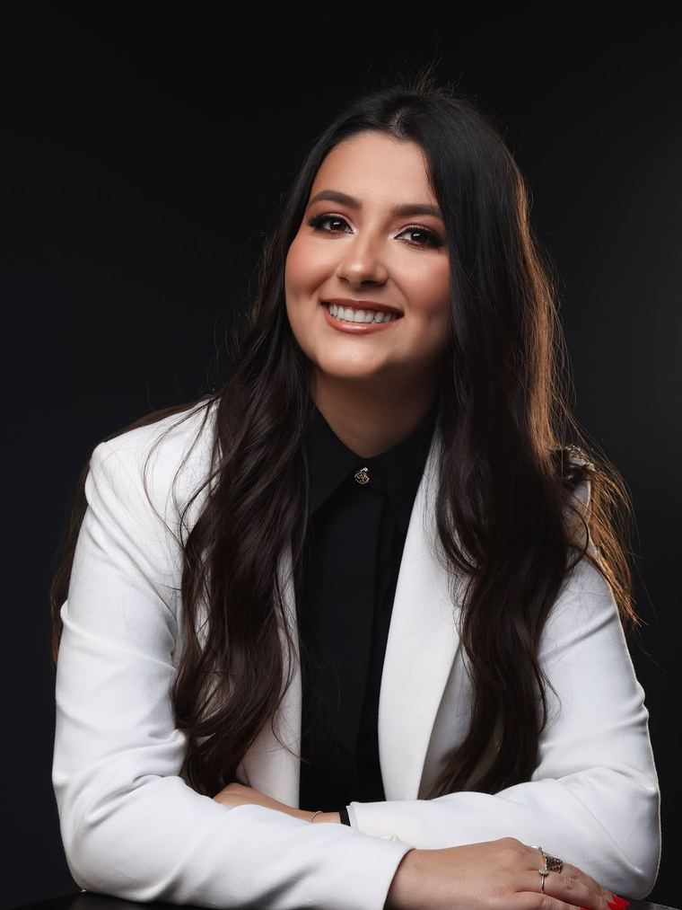

Antes de mais nada
Ela começou agora. Este site não vai fingir o contrário.
Sobre o dia em que recebeu a carteira da OAB, ela própria escreveu que aquilo era “apenas o começo de uma longa caminhada”. Não há uma parede de casos para exibir — e mesmo que houvesse, exibir casos como oferta é vedado pela norma da profissão.
O que existe é uma advogada inscrita, com endereço no Centro de São Leopoldo, um telefone publicado, e um jeito de escrever sobre o trabalho que você pode ler abaixo e julgar por conta própria.

Quem é
No começo de uma longa caminhada — a expressão é dela
Glenda Meirelles é advogada inscrita na Ordem dos Advogados do Brasil, Seção do Rio Grande do Sul, e atende em São Leopoldo. Toda a informação desta página termina aí — o resto são as palavras dela.
“Ser advogada é ter a responsabilidade de defender direitos, enfrentar desafios e, acima de tudo, nunca esquecer que por trás de cada processo existe uma história.”
@glenda_meirelles · Dia da Advocacia
Ela escreveu isso num post sobre a profissão, não num site de captação. A diferença importa: ninguém revisou essa frase para vender nada.
“Embora essa conquista represente um grande marco, sei que ela também simboliza apenas o começo de uma longa caminhada.”
@glenda_meirelles · sobre receber a carteira da OAB
É a própria advogada dizendo que está no início. Um site que apagasse isso estaria mentindo na primeira linha — e seria a mentira mais fácil de desmontar, porque o perfil dela é público.
Honestidade estrutural
O que não está neste site, e por quê
Metade por norma, metade por falta de informação. Nos dois casos, é melhor dizer do que preencher com enfeite.
- Áreas de atuação Não estão listadas porque ainda não foram formalmente informadas. Escrever “Família · Cível · Trabalhista” só porque toda página de advogado escreve seria inventar. Pergunte pelo telefone.
- Depoimentos e avaliações de clientes Vedados pelo Provimento 205/2021 do Conselho Federal da OAB. Avaliação de cliente funciona como argumento de venda, e a norma pede informação. A vedação alcança também o dado estruturado que os buscadores leem.
- Promessa de resultado, prazo ou êxito Também vedada — e, fora da norma, simplesmente impossível de fazer com honestidade antes de ler os documentos do seu caso.
- Honorários, desconto ou primeira consulta grátis Valor não pode ser usado como argumento de atração. Honorários se conversam no atendimento.
- Horário de atendimento Ainda não confirmado. Até estar, o caminho honesto é combinar pelo telefone.
Perguntas
O que costuma travar na garganta
Advogada em começo de carreira é pior?
É uma pergunta legítima e merece resposta direta: depende inteiramente do caso. Um pedido de divórcio consensual, um inventário sem litígio, uma revisão de contrato, uma defesa em juizado — são trabalhos em que dedicação e disponibilidade pesam bastante.
Já uma causa de alta complexidade, com tese controvertida em tribunal superior, costuma pedir quem já percorreu aquele caminho antes. A resposta certa não é “sim” nem “não”: é contar o seu caso e ouvir com franqueza se é ou não para ela. Fazer essa pergunta diretamente, a qualquer profissional, é legítimo — e a resposta que você recebe já diz bastante.
Como confiro que ela é advogada mesmo?
Pelo Cadastro Nacional dos Advogados, em cna.oab.org.br, mantido pelo Conselho Federal da OAB. A consulta é pública e gratuita, e aceita busca por nome, número de inscrição ou seccional. Existe também o ConfirmADV, em confirmadv.oab.org.br, criado pela própria Ordem diante de tentativas de fraude com falsa identidade profissional.
Vale o hábito para qualquer profissional, não só para esta. Peça o número de inscrição antes de transferir qualquer valor a quem quer que seja. Glenda Meirelles é advogada inscrita na OAB/RS e atende em São Leopoldo, Rio Grande do Sul.
Fonte: Conselho Federal da OAB — CNA e ConfirmADV.
Por que este site parece tão vazio de promessas?
Porque a publicidade da advocacia tem caráter meramente informativo. O Provimento 205/2021 do Conselho Federal da OAB admite o marketing jurídico, mas veda a promessa de resultados, o uso de casos concretos como oferta, a menção a honorários, formas de pagamento, gratuidade ou desconto como mecanismo de atração, e a ostentação.
A vedação alcança também o código: uma nota de avaliação embutida no dado estruturado que os buscadores leem conta como avaliação publicada, ainda que nenhuma estrela apareça na tela. Por isso não há avaliação nem no texto nem no código desta página.
Fonte: Provimento 205/2021, Conselho Federal da OAB.
Preciso já saber o que quero antes de ligar?
Não. Boa parte das pessoas chega sem saber sequer o nome do que está vivendo, e descrever a situação em ordem cronológica — o que aconteceu, quando, com quem, o que foi assinado — já é suficiente para começar.
Separe o que existir por escrito: contratos, recibos, comprovantes, conversas de aplicativo, e-mails, cartas e qualquer papel de cartório ou do fórum. Documento que parece irrelevante costuma ser o que decide.
Contato
Uma saída, no fim, como deve ser
R. Pres. Roosevelt, 1223 — Centro
São Leopoldo/RS, CEP 93010-060
(51) 98090-9117
Horário de atendimento não informado nesta página — combine pelo telefone.